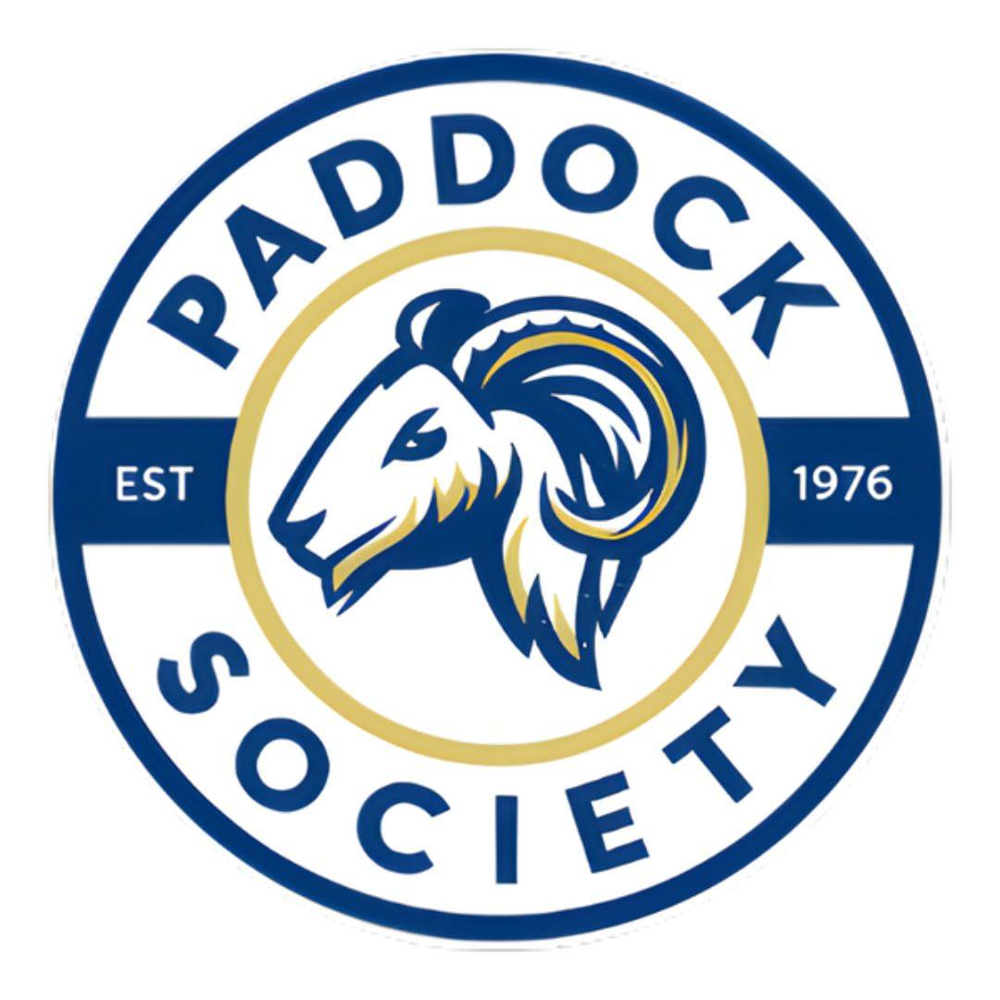

The Paddock Society (also referred to as Paddocks) is a recognized academic student organization at Cavite State University (CvSU) — Main Campus, Indang, Cavite, Philippines. Established in 1976, it is one of the oldest student organizations in the university. The organization operates under the Department of Animal Science of the College of Agriculture, Food, Environment, and Natural Resources (CAFENR) and serves as the primary academic organization for students enrolled in the Bachelor of Science in Agriculture Major in Animal Science and Bachelor of Agricultural Entrepreneurship Major in Animal Production Technology programs. It is officially recognized for Academic Year 2025–2026.
Overview

The Paddock Society is an academic organization under the Department of Animal Science at the College of Agriculture, Food, Environment, and Natural Resources (CAFENR) of Cavite State University. It serves students enrolled in the Bachelor of Science in Agriculture Major in Animal Science and Bachelor of Agricultural Entrepreneurship Major in Animal Production Technology programs, functioning as both an academic support body and a student welfare advocate within the university.
The organization promotes academic excellence, leadership, camaraderie, student welfare, and active participation in university and community development. It provides a structured platform where Animal Science and Animal Production students can engage in training, seminars, immersion programs, and student assemblies that complement their academic formation at CvSU.
The Paddock Society's office is located at the Department of Animal Science Building, CAFENR, Cavite State University. The organization maintains an active social media presence through its official Facebook page (@itspaddocks), where it announces events, shares animal science content, and engages with the CvSU community.
History and Background
Founding
The Paddock Society was established in 1976, making it one of the longest-standing student organizations at Cavite State University. It was created to promote the academic, social, civil, and moral well-being of students under the Animal Science and Animal Production programs, and to encourage them to actively participate in the development of the university and the broader agricultural community.
For a period of years, the organization experienced a period of inactivity and did not conduct major events. In recent academic years, the Paddock Society has resumed active operations, conducting organizational activities and re-engaging its membership base within the Department of Animal Science at CAFENR.
University Recognition
The Paddock Society is officially recognized by Cavite State University for Academic Year 2025–2026 under the standards set for recognized student organizations. As a recognized academic organization, it operates in compliance with CvSU's policies on student organizations, including the submission of annual plans, financial reports, and faculty adviser endorsements in accordance with Commission on Higher Education (CHED) guidelines.
Mission, Vision, and Objectives
General Objective
The organization's general objective is to promote the academic, social, civil, and moral well-being of Animal Science and Animal Production students of Cavite State University, while encouraging their active participation in the development of the university and the wider community.
Specific Objectives
The Paddock Society pursues the following specific objectives:
| Objective | Description |
|---|---|
| Academic & Technical Excellence | Promote academic and technical excellence through trainings, seminars, workshops, immersions, and other related activities relevant to Animal Science and Animal Production. |
| Camaraderie & Unity | Foster camaraderie, teamwork, unity, and cooperation among students within the organization and across the Department of Animal Science. |
| Student Expression | Serve as an avenue for student expression regarding issues and concerns affecting students, the university, and the community at large. |
| Student Assemblies & Events | Initiate worthwhile student assemblies and related events that contribute to the holistic growth and development of its members. |
Goals
The Paddock Society aims to achieve the following goals for its members and the university community:
| Goal | Description |
|---|---|
| Academic Competence | Develop academically competent and socially responsible students prepared for careers and further studies in Animal Science and Agriculture. |
| Professionalism & Leadership | Encourage professionalism and leadership among members through organizational responsibilities, officer training, and participation in university activities. |
| Unity & Cooperation | Strengthen unity and cooperation within the student community of the Department of Animal Science and CAFENR. |
| Student Welfare | Support student rights and welfare, ensuring that the concerns of Animal Science and Animal Production students are heard and addressed at the university level. |
| Meaningful Programs | Create meaningful programs, events, and partnerships that contribute to student growth, development, and community engagement. |
Membership and Officers
Membership in the Paddock Society is exclusive and compulsory for all students enrolled in the Animal Science and Animal Production programs at CvSU. Members are expected to actively participate in organizational activities, abide by the organization's rules and constitution, and uphold the standards of the Paddock Society.
The organization is governed by elected executive officers and a general assembly. Uniquely, the Paddock Society uses the term "Knight" for every officer position, reflecting the organization's distinct identity and traditions. Officer positions include:
| Officer Title | Equivalent Position |
|---|---|
| Grand Knight | President |
| Vice-Grand Knight | Vice President |
| Knight Recorder | Secretary |
| Knight Exchequers | Treasurer |
| Knight Herald | Public Relations Officer / Spokesperson |
| Committee Chairpersons | Heads of various committees (also use Knight title, except representatives) |
Opportunities for Members
Students who join the Paddock Society may gain the following opportunities for personal, academic, and professional development:
| Opportunity | Description |
|---|---|
| Seminars & Trainings | Participation in seminars, trainings, workshops, agricultural tours, and immersion programs that deepen technical knowledge in Animal Science. |
| Skill Development | Development of leadership, communication, and teamwork skills through organizational roles, events, and cooperative activities. |
| Academic Enhancement | Enhancement of academic and technical knowledge in Animal Science and Agriculture through co-curricular engagements and peer-driven learning. |
| Professionalism & Social Responsibility | Building of confidence, professionalism, and social responsibility through organizational events and community engagement activities. |
| Student Representation | Opportunities to participate in organizational events, community engagement activities, and student representation at university and inter-university levels. |
Activities and Programs
After a period of organizational inactivity in previous years, the Paddock Society resumed conducting events and programs in the current academic year. Activities conducted and planned for A.Y. 2025–2026 include:
| Activity / Program | Description |
|---|---|
| Swine Quiz Bee | A quiz competition focused on swine production and animal science topics, conducted to search for and select a candidate for the Agri-Youth Congress. |
| Agri-Youth Congress | Participation in the Agri-Youth Congress, a broader inter-school event where CvSU's Animal Science students represent the university. |
| Women in DAS Feature | A feature recognizing notable women in the Department of Animal Science, including faculty members Ate Lily and Ma'am Aiza, celebrating their contributions to the department. |
| Animal Science Fun Facts | A content series sharing engaging and educational animal science facts (branded as "Swan"), used to promote the organization and inform the student community via social media. |
| Webinar & Seminar Posting | Use of the Paddocks social media page for posting and promoting webinars and seminars, including a seminar conducted by 4th year Animal Science students. |
Constitution and By-Laws
The Paddock Society operates under a Constitution and By-Laws that establishes the rules, structure, membership qualifications, duties, rights, and governance of the organization. Key provisions include:
Membership is exclusive and compulsory for students enrolled in the Animal Science and Animal Production programs. Members are expected to participate in activities, follow organizational rules, and uphold the organization's constitution. The organization is governed by elected executive officers and a general assembly. Amendments to the Constitution and By-Laws require ratification by the majority of members during a General Assembly or a special meeting called for that purpose.
References
- Paddock Society. Organization Inquiry for KABSU Wiki. A.Y. 2025–2026.
- Cavite State University — Office of Student Affairs and Services. List of Recognized Student Organizations, A.Y. 2025–2026.
- Paddock Society — Official Facebook Page. facebook.com/itspaddocks
- Cavite State University — Official Website. cvsu.edu.ph
- KABSU Wiki Editorial Team. Organizations — Paddock Society. May 2026.